1. Main Window
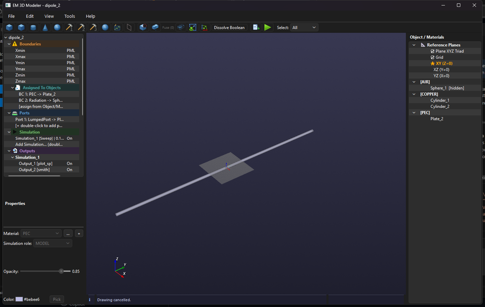
Project Tree
Configure boundaries, ports, simulation jobs, outputs and mesh settings.
3D Viewport
Create, select, inspect and navigate geometry. The active reference plane and grid guide drawing.
Objects / Materials
Group objects by material, manage visibility, reference planes and context actions.
Info bar
Shows status messages, warnings and operation results.
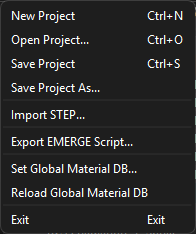
The File menu contains project creation and loading, save commands, STEP import, EMERGE script export, global material database actions and Exit.
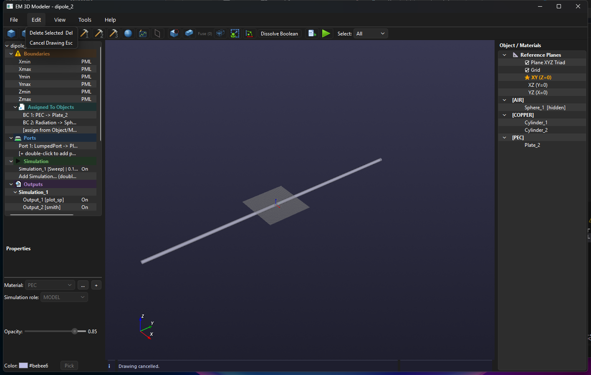
The Edit menu provides Delete Selected and Cancel Drawing.
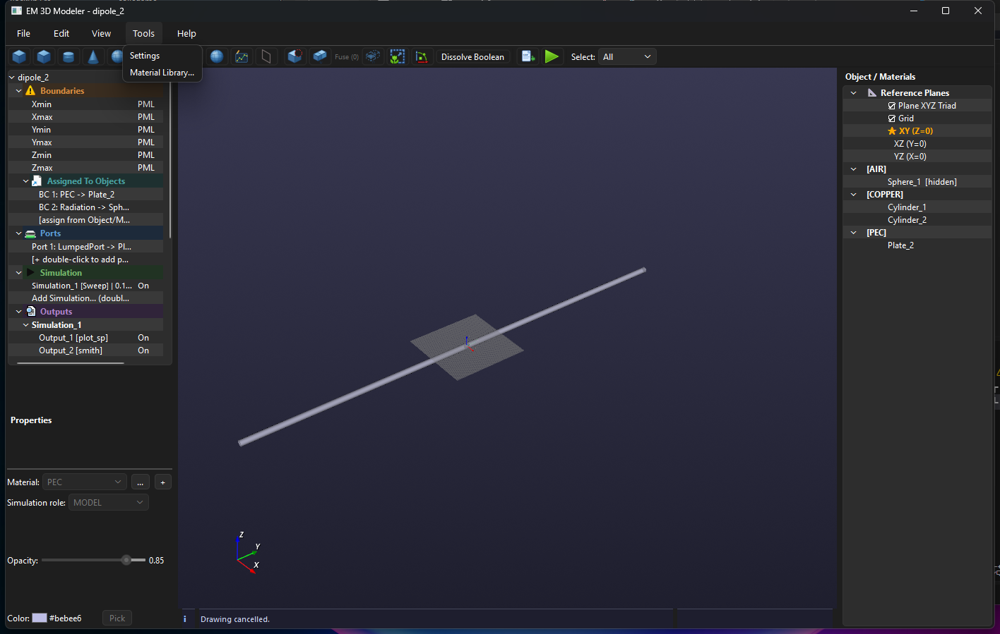
The Tools menu opens Settings and Material Library.
Toolbar icons
- Box, Plate, Cylinder, Cone, Sphere, Pyramid, Wedge, Torus, Ellipsoid: create the corresponding primitive on the active plane.
- Sketch: opens the parametric sketch canvas.
- Planar: creates a planar structure by viewport snapping.
- Cut, Fuse, Common: perform boolean subtraction, union and intersection.
- Scale: applies a numeric scale factor.
- Move On Plane: moves selected objects toward the active plane origin.
- Dissolve Boolean: restores boolean source objects.
- Import STEP: imports STEP geometry.
- Play: opens the EMERGE Simulation panel.
- Select: chooses All, Surface, Edge or Vertex picking.
The Edit menu provides Delete Selected and Cancel Drawing.
2. Geometry and Sketching
Use the toolbar to create Box, Cylinder, Cone and Sphere. Select an object to edit dimensions, material, color and opacity. Ctrl/Shift enables multi-selection in the Objects / Materials tree.
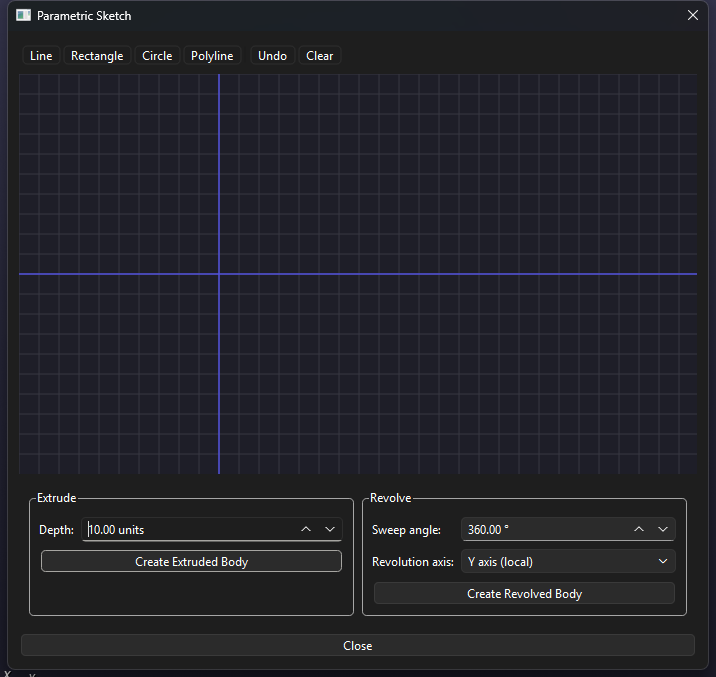
- Line, Rectangle, Circle, Polyline: create a closed profile.
- Extrude: creates a body from a profile and depth.
- Revolve: rotates a profile around a local axis.
- Undo/Clear: edit the current profile.
3. Materials and Visibility
Objects can be hidden, shown, renamed and assigned a material from Project or Global DB. Hidden objects remain in the EMERGE simulation but are displayed with opacity 0 in the EMERGE 3D viewer. Visible objects retain their modeler opacity.
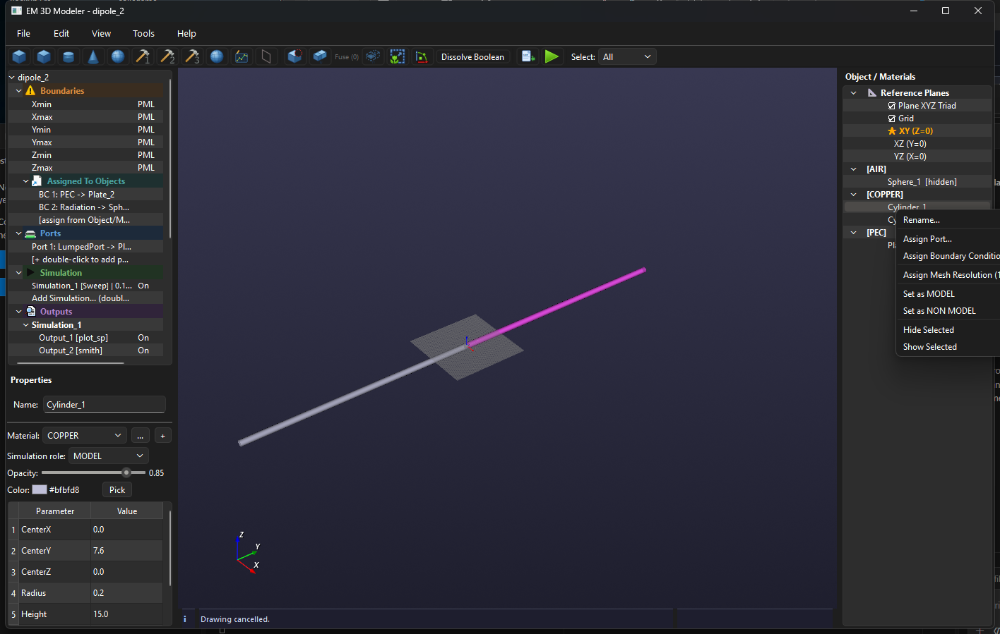
The object context menu provides Rename, Assign Port, Assign Boundary Condition, Assign Mesh Resolution, MODEL/NON MODEL role, Hide Selected and Show Selected.
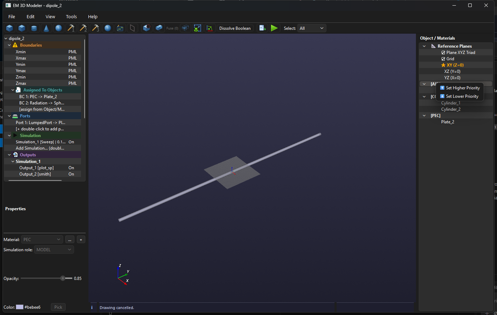
The active material context menu changes material priority with Set Higher Priority and Set Lower Priority.
Assign Material
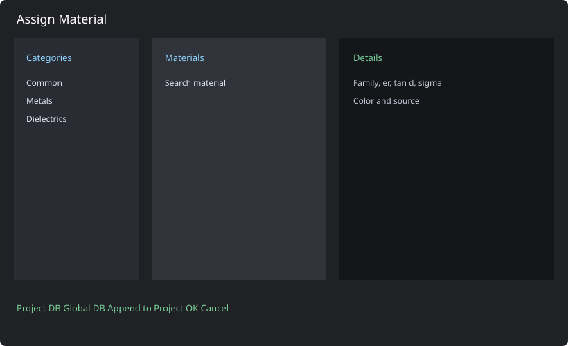
Choose category, database source, material and inspect electromagnetic properties before confirming.
Material Library
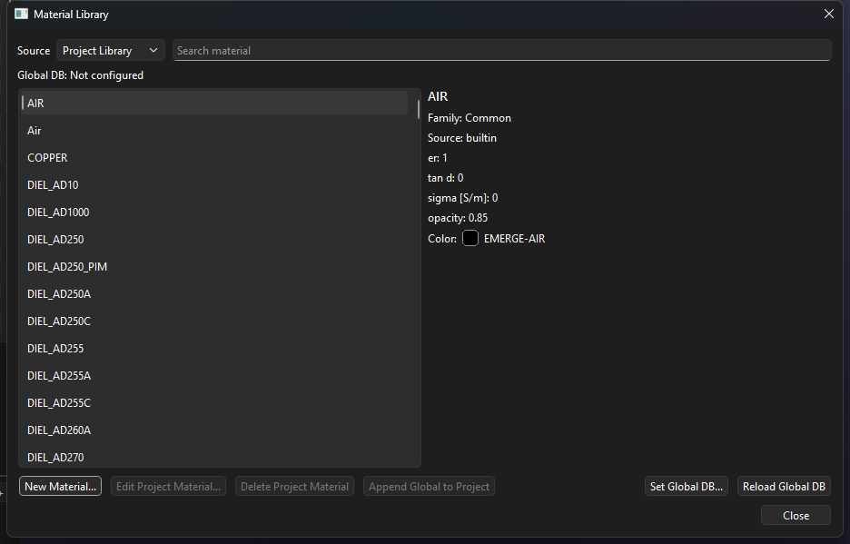
Search, create, edit, delete, append and reload material records.
Material Editor
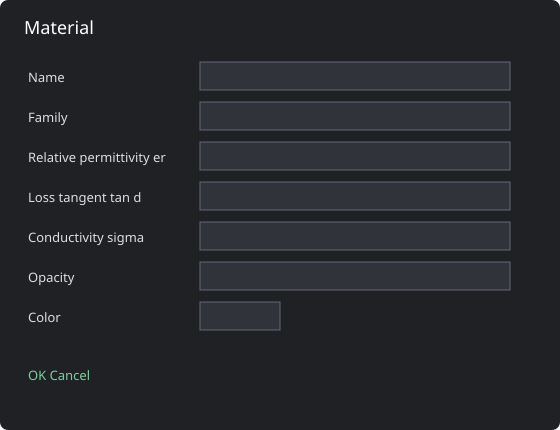
Set family, relative permittivity, loss tangent, conductivity, opacity and color.
4. Boolean and STEP Workflows
Select base and tool objects, then use Cut, Fuse or Common. For complex STEP meshes use smaller selections and inspect each result. STEP import accepts .step and .stp; imported solids are exported as separate STEP objects for EMERGE.
5. Reference Plane
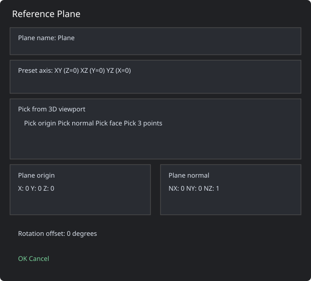
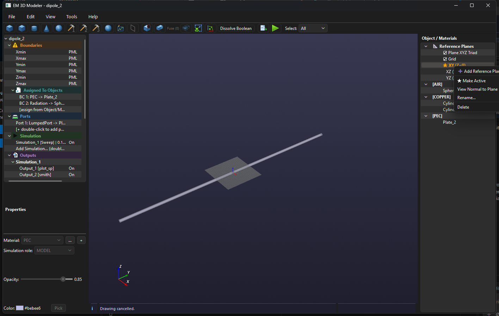
The non-modal dialog allows continued viewport interaction. Use XY/XZ/YZ presets, pick an origin, face normal, complete face, or three points. Numeric origin, normal and in-plane rotation are also available.
6. Settings
Display
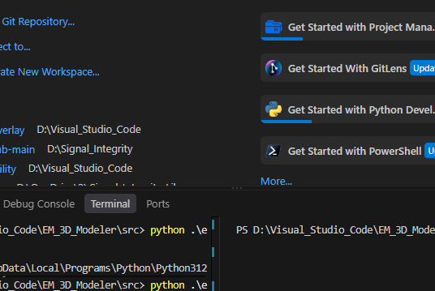
Simulation
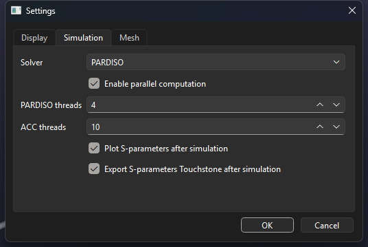
Mesh
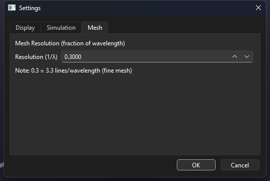
- Display: units, decimal separator, workspace, grid, plane triad and selection color.
- Simulation: solver, parallel computation, PARDISO/ACC threads, automatic S-parameter plot and Touchstone export.
- Mesh: default resolution as a fraction of wavelength; per-object overrides are available in the Project Tree.
7. EMERGE Configuration
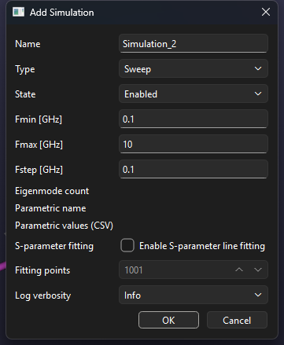
- Sweep: minimum, maximum and step frequency.
- Eigenmode: number of modes.
- Parametric: parameter name and comma-separated values.
- Ports: WaveguidePort, LumpedPort or PlaneWave. Port plates are excitation surfaces, not ordinary object boundaries.
- Boundaries: global X/Y/Z boundaries and object-level assignments.
Port editor
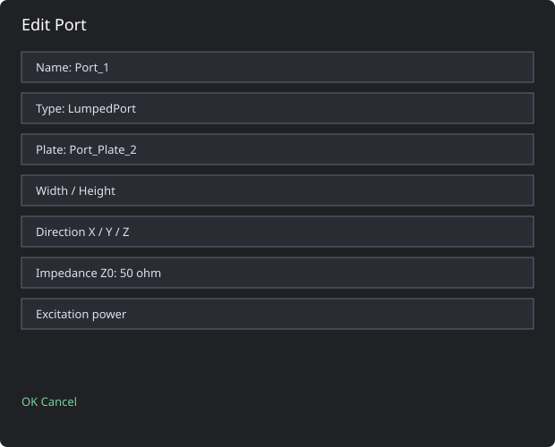
Defines plate, dimensions, direction, impedance and excitation power.
Boundary editor
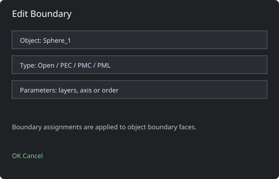
Assigns PEC, PMC, Open, PML or Radiation to object boundary faces.
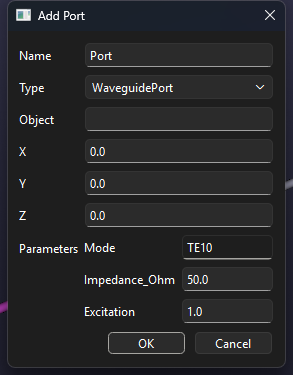
8. Output Plots
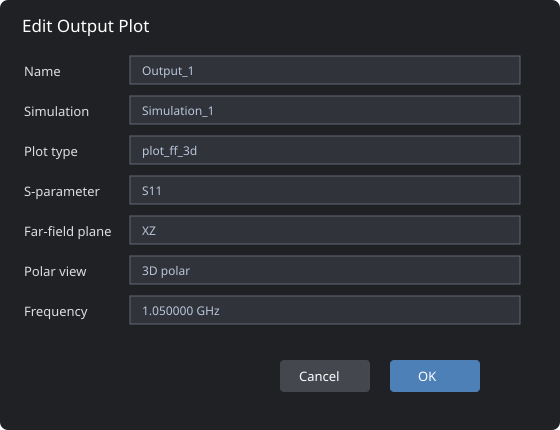
- plot_sp: selected S-parameter.
- plot_vswr: selected S-parameter as VSWR.
- plot: selected S-parameter magnitude in dB.
- smith: S-parameter and port indices.
- plot_ff / plot_ff_polar: selected plane and frequency.
- plot_ff_3d: official EMERGE interactive 3D display.
(Fmin + Fmax) / 2. After results are reloaded, EMERGE uses the nearest available sample.ff3d = field.farfield_3d(boundary_selection) model.display.add_farfield3d(ff3d, component="normE", quantity="abs", dB=True) model.display.show()
9. Running and Saving
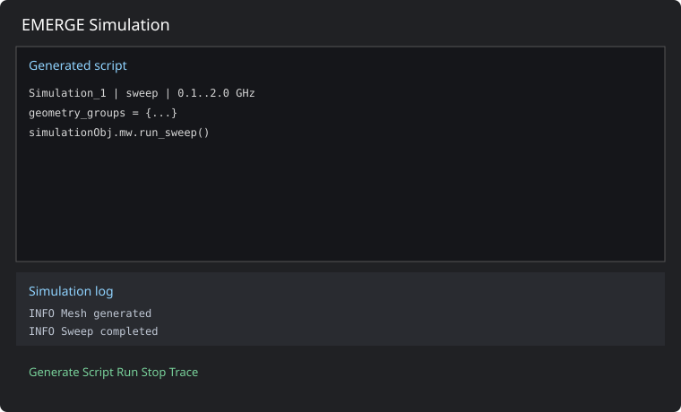
- Configure geometry, materials, ports, boundaries and mesh.
- Enable a simulation and add outputs.
- Open EMERGE Simulation, generate the script and inspect it.
- Run and monitor the log.
- Reload results from the output tree.
Save Project writes an .em3d file containing geometry, materials, planes, visibility, opacity, simulations and outputs. Export EMERGE Script writes the generated script without launching it.
10. Context Actions
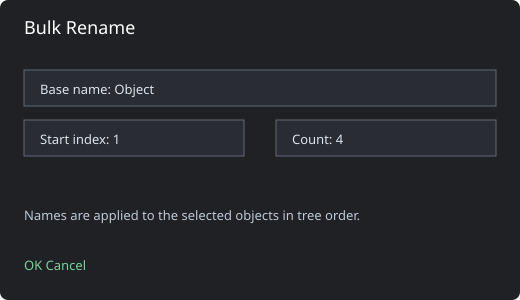
Use context actions to hide/show, rename, assign materials, ports, boundaries and mesh resolution. Bulk Rename applies a base name and sequential indices.
11. Troubleshooting
- Missing far-field: enable a far-field output and rerun so E/H fields are saved.
- Empty 3D field: check selected frequency, saved fields and integration geometry.
- STEP boundary error: regenerate the script; boundaries are applied to objects inside STEPItems.
- Qt/OpenGL warnings: shutdown thread warnings are usually non-fatal if the app exits normally; headless environments may report VTK OpenGL errors.
- Boolean/STEP errors: validate geometry, re-export STEP and reduce the selection size.
12. Portable Build and Shortcuts
The PyInstaller onedir build must be distributed as a complete folder, including the executable, _internal, docs and Icons. Do not copy only the EXE.
Ctrl+N New · Ctrl+O Open · Ctrl+S Save · Delete Delete selected · Esc Cancel drawing · Home Reset camera · Alt+F4 Close.